Semanario
Week 1
Week 2
Week 3
made for DTS
Seja muito bem vindo a este semanário! O intuito aqui é externalizar a boa obra que Jesus Cristo tem feito em mim. Selecione a semana que deseja conferir!!!
